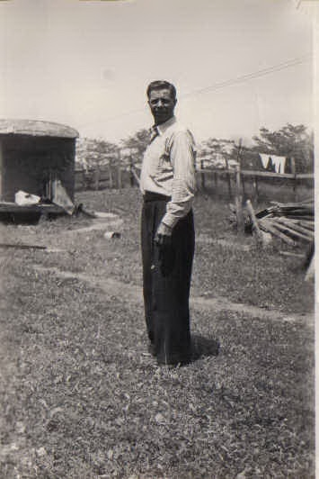
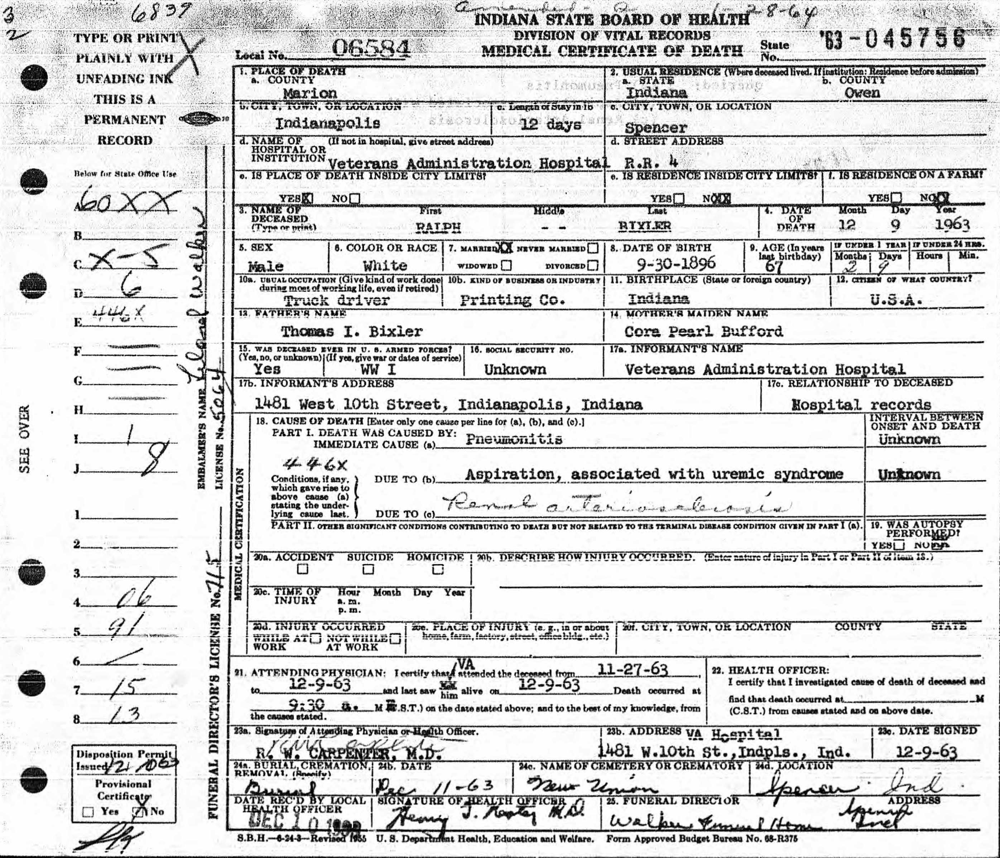
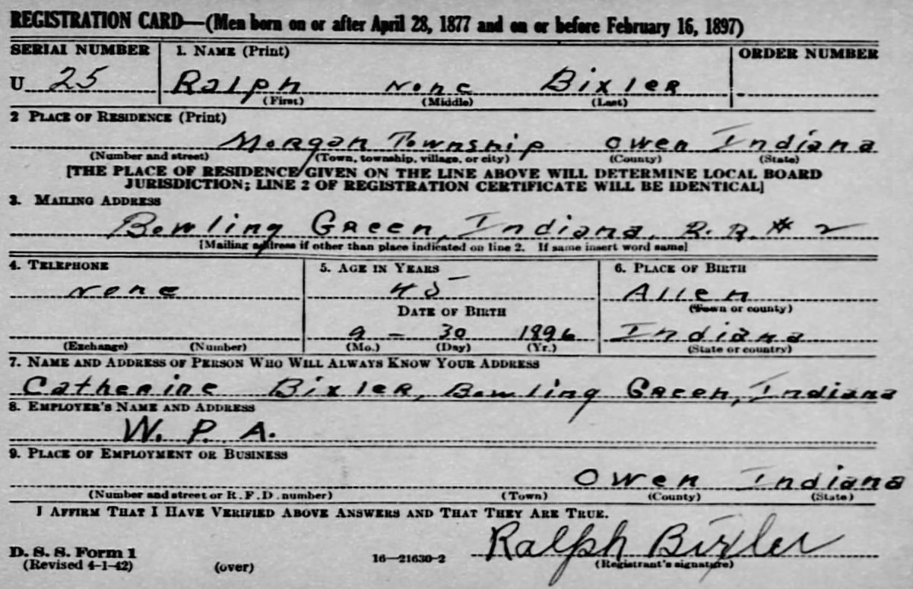
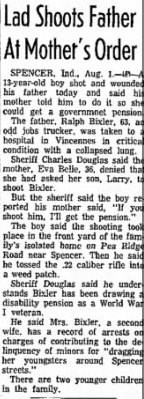
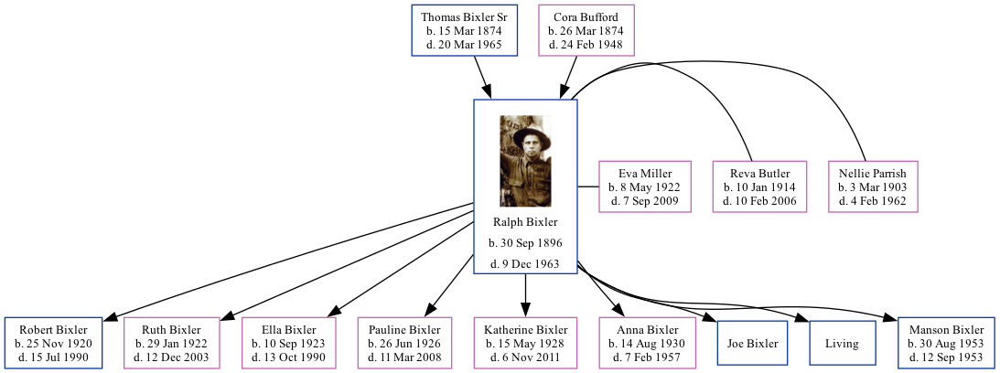

Ralph Voris Bixler 1896 - 1963
[ Home ] | [ Calendar ] | [ Surnames Index ] | [ Family History ]The 2nd of 12 children of Thomas Bixler Sr and Cora Bufford, Ralph Bixler, the fourth cousin twice-removed on the mother's side of Nigel Horne, was born in Fort Wayne, Allen, Indiana, USA on Sep 30, 18961,2,3 and was married 3 times - to Nellie Parrish (on Sep 29, 1919 in Owen, Indiana, USA) Reva Butler (on Apr 30, 1932 in Putnam, Indiana) Eva Miller (on Jun 28, 1945 in Martinsville, Morgan, Indiana)2. He had 9 children: Manson Kay with Eva Bell; Robert Edward, Ruth Marie, Ella Louise, Pauline, Katherine and Anna Mae with Nellie May; and Joe with Reva Leealta, and one surviving child. Like his father, he was a farmer.
Throughout his life, Ralph lived in several places: at his birthplace on Jun 9, 1900; in Washington, Indiana on Apr 21, 19104; on Joe Zink Road, Clay, Indiana on Apr 3, 19305 (the same place as his father had been living on Apr 2, 1930); in Morgan, Indiana on May 9, 1940 and in 1942; and on Pea Ridge Road, Spencer, Indiana in 1958.
He died on Dec 9, 1963 at Veterans Administration Hospital, Indianapolis, Marion, Indiana3 (pneumonitis) and was buried at New Union Cemetery, Spencer, Indiana on Dec 11, 1963.
Parents
- Thomas Isaac was born on Mar 15, 1874
- Cora Pearl was born on Mar 26, 1874
Children
- Robert Edward was born on Nov 25, 1920
- Ruth Marie was born on Jan 29, 1922
- Ella Louise was born on Sep 10, 1923
- Pauline was born on Jun 26, 1926
- Katherine was born on May 15, 1928
- Anna Mae was born on Aug 14, 1930
- Manson Kay was born on Aug 30, 1953
Citations
- Social Security Death Index - Findmypast
- United States Marriages - Findmypast
- Web: Monroe County, Indiana, Obituary Index, 1899-2011 Ancestry.com Operations, Inc.
- US Census 1910 - Findmypast (was age 13 and the son of the head of the household)
- US Census 1930 - Findmypast (was age 33 and the head of the household)
Media
Ralph Voris Bixler
Ralph Voris Bixler - 2
Ralph Bixler

Ralph Bixler - death certificate

WW2 Registration Card

1900 US Census

1910 US Census

1930 US Census

1940 US Census

The Terre Haute Star - 2 Aug 1958

Social Security Death Index - USBMD/SSDI/316096309
Indiana Marriages 1811-1959 Transcription - R_75585969
Indiana Marriages 1811-1959 Transcription - R_22098904855
Indiana, Marriages, 1780-1992 Transcription - R_327886472
United States Marriages Transcription - FS-MAR-32970406-1
United States Marriages Transcription - FS-MAR-40479693-1
United States Marriages Transcription - FS-MAR-39595358-1
United States Marriages Transcription - FS-MAR-40762087-1
1930 US Census Transcription - USC-1930-004950638-00007-039
1910 US Census Transcription - USC-1910-004971230-00612-026
United States Marriages - R_101831310170/1
United States Marriages - R_75585969/1
United States Marriages - R_22098904855/1
United States Marriages - R_327886472/1
Family Tree
Generated by Ged2Site. Last updated on Jul 20, 2025